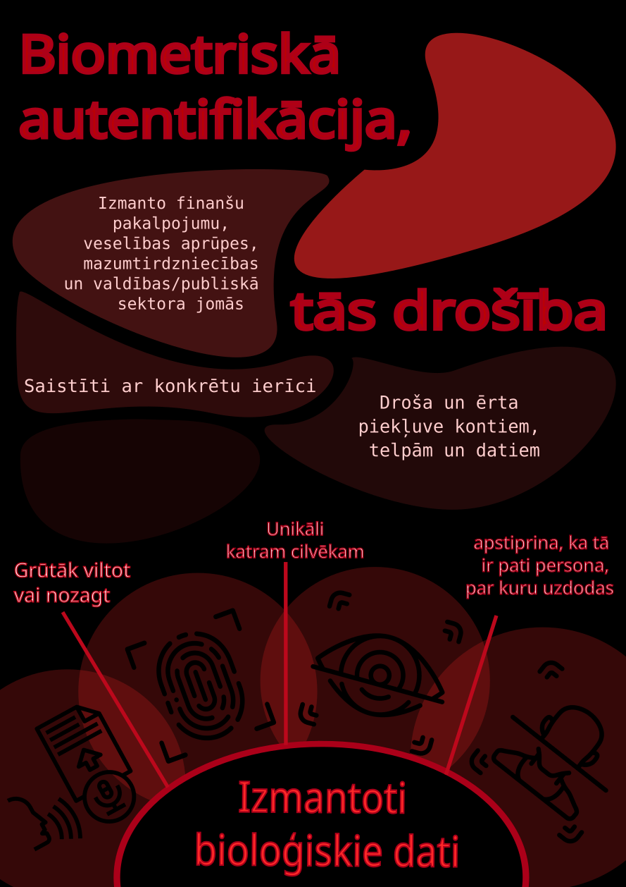

Biometriskā autentifikācija izmanto personas unikālos bioloģiskos vai uzvedības raksturlielumus, lai apstiprinātu, ka tā ir tā pati persona, par kuru uzdodas. Bioloģiskie dati ir, piemēram, pirkstu nospiedumu skenēšana, tīklenes skenēšana, balss atpazīšana, DNS atbilstība, vēnu skenēšana. (Kas ir FIDO2?, 2025)
Biometriskie dati ir saistīti arī ar konkrētu ierīci, tāpēc uzbrucēji nevar tos izmantot, neiegūstot piekļuvi pašai ierīcei. Šāda veida autentifikācija kļūst arvien populārāka, jo lietotājiem tā ir ērta — nekas nav jāiegaumē —, bet ļaunprātīgiem aktoriem ir grūti to nozagt, kas padara to drošāku par parolēm. Biometriskie dati ir unikāli katram cilvēkam un tos ir daudz grūtāk viltot vai nozagt. (Biometric authentication , 2025)
Dažādu nozaru uzņēmumi izmanto biometrisko autentifikāciju, lai nodrošinātu darījumu un svarīgas informācijas drošību, tostarp finanšu pakalpojumu, veselības aprūpes, mazumtirdzniecības un valdības/publiskā sektora jomās. Šīs tehnoloģijas, piemēram, pirkstu nospiedumu, sejas un balss atpazīšana uzlabo drošību, novērš krāpšanu, racionalizē procesus un uzlabo lietotāja pieredzi, nodrošinot drošu un ērtu piekļuvi kontiem, telpām un datiem. (Biometric Authentication: Enhancing Security Without Compromising Privacy, 2025)
